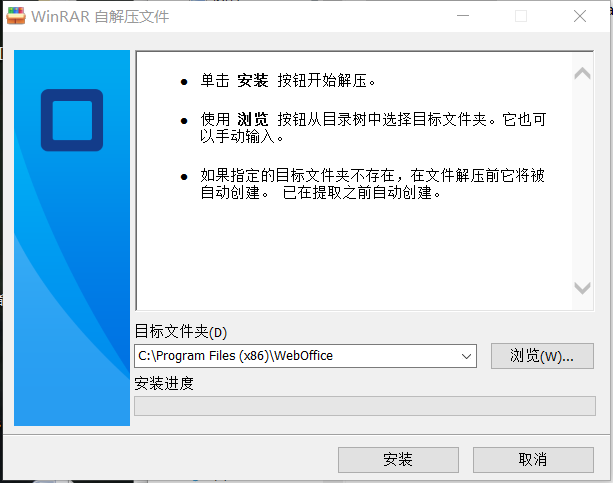
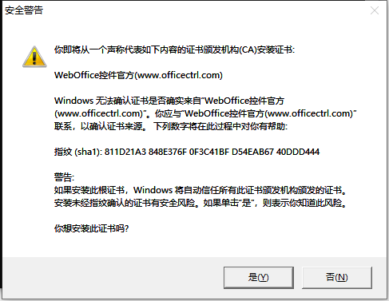
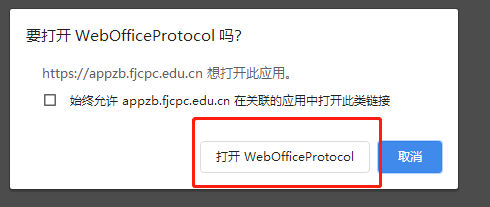

不能在线预览文档？请阅读本说明
（若已打开文档，请忽略此说明）
由于在线办公需要在线编辑Word文档，用户需要安装Word插件，关于插件说明如下：
第一次使用请先下载Word插件，下载完成后打开WebOffice.exe。然后选择默认文件夹，安装中请若出现安装证书请求框，请点击“是”。
 
插件安装后预览文件时会出现下列提示框，请点击打开按钮。

注意，若使用期间不慎将插件删除，重新下载安装即可。
插件下载地址